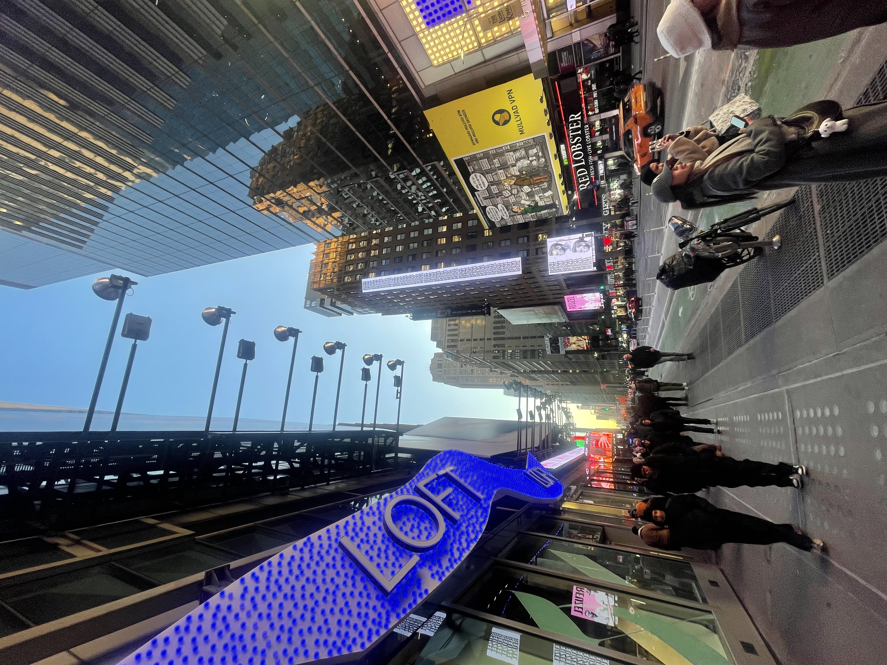
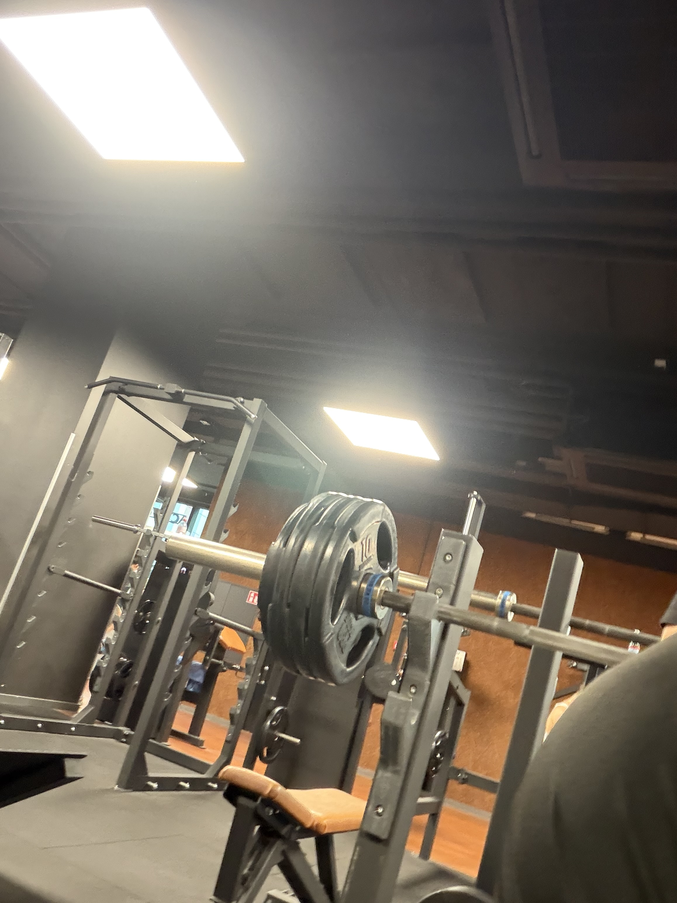
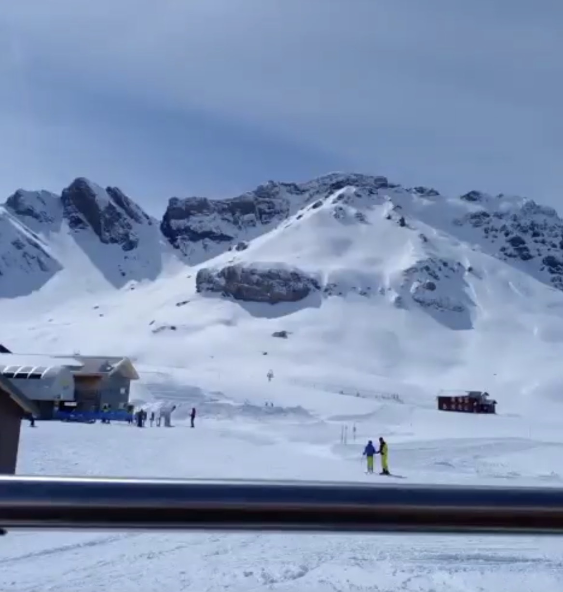
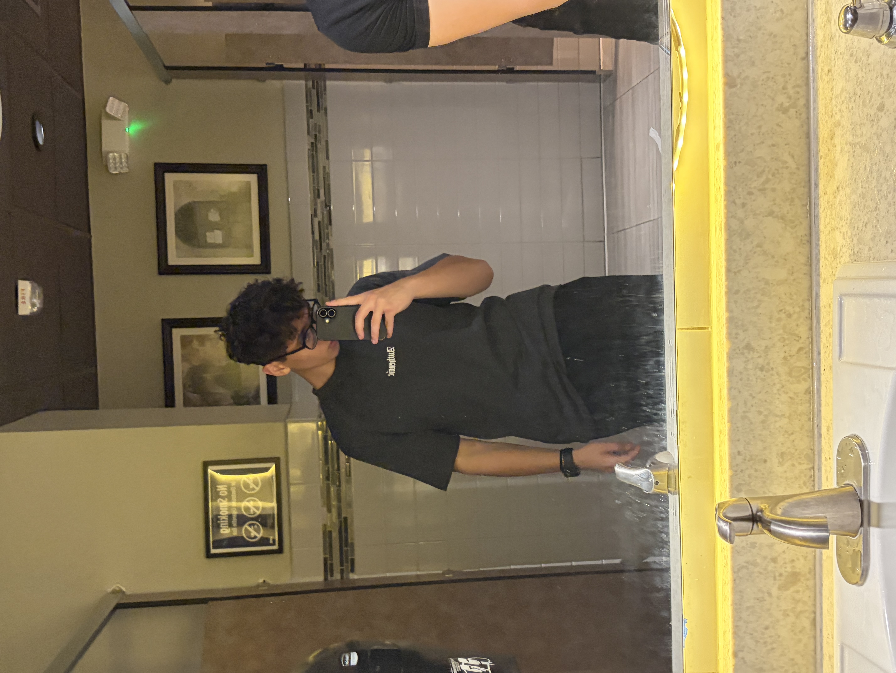

Hey, Ahmet hier.
Scrollen Sie nach unten, um mich besser kennenzulernen.




Wer bin ich?
Wer ist Ahmet eigentlich?
Ich bin Ahmet İhsan Ceylan, 18 Jahre alt und besuche die KSB in Aarau. Ich lebe in Gränichen, in einem ruhigen und schönen Zuhause in der Nähe der Natur.
Zurzeit bin ich auf der Suche nach einer Lehrstelle, bei der ich mich weiterentwickeln und neue Dinge lernen kann. Ich bin neugierig, probiere gerne neue Dinge aus und lerne jeden Tag etwas Neues dazu.
Ich würde mich als ruhige, offene und lernfreudige Person beschreiben. In meiner Freizeit gehe ich gerne ins Fitnessstudio oder bin in den Bergen unterwegs. Ich geniesse es, aktiv zu sein und Zeit in der Natur zu verbringen.
Wenn mich etwas interessiert, beschäftige ich mich gerne genauer damit und versuche, es selbst herauszufinden.
Ich weiss, dass ich noch am Anfang meines Weges stehe – und genau das sehe ich als Chance. Denn es gibt noch vieles zu lernen, auszuprobieren und zu entdecken
Zurzeit bin ich auf der Suche nach einer Lehrstelle, bei der ich mich weiterentwickeln und neue Dinge lernen kann. Ich bin neugierig, probiere gerne neue Dinge aus und lerne jeden Tag etwas Neues dazu.
Ich würde mich als ruhige, offene und lernfreudige Person beschreiben. In meiner Freizeit gehe ich gerne ins Fitnessstudio oder bin in den Bergen unterwegs. Ich geniesse es, aktiv zu sein und Zeit in der Natur zu verbringen.
Wenn mich etwas interessiert, beschäftige ich mich gerne genauer damit und versuche, es selbst herauszufinden.
Ich weiss, dass ich noch am Anfang meines Weges stehe – und genau das sehe ich als Chance. Denn es gibt noch vieles zu lernen, auszuprobieren und zu entdecken